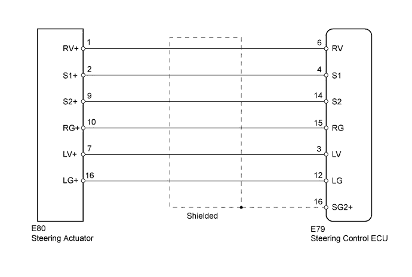
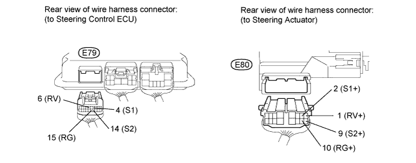
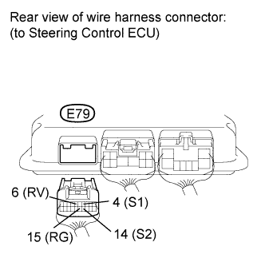

DTC C15A3/63 Actuator Malfunction |
DTC C15C5/69 Motor Revolution Angle Signal (Test Mode DTC) |
| DTC Code | DTC Detection Condition | Trouble Area |
| C15A3/63 | The steering control ECU detects a malfunction in the rotation angle sensor circuit. |
|
| C15C5/69 | A steering signal indicating a motor rotation angle of 36° or more (to the left or right) is input after entering test mode.* |
|

| 1.CHECK HARNESS AND CONNECTOR (STEERING CONTROL ECU - STEERING ACTUATOR) |

Disconnect the E79 steering control ECU connector.
Disconnect the E80 steering actuator connector.
Measure the resistance according to the value(s) in the table below.
| Tester Connection | Condition | Specified Condition |
| E79-4 (S1) - E80-2 (S1+) | Always | Below 1 Ω |
| E79-6 (RV) - E80-1 (RV+) | ||
| E79-14 (S2) - E80-9 (S2+) | ||
| E79-15 (RG) - E80-10 (RG+) | ||
| E79-4 (S1) - E79-6 (RV) | Always | 10 kΩ or higher |
| E79-4 (S1) - E79-14 (S2) | ||
| E79-4 (S1) - E79-15 (RG) | ||
| E79-6 (RV) - E79-14 (S2) | ||
| E79-6 (RV) - E79-15 (RG) | ||
| E79-14 (S2) - E79-15 (RG) | ||
| E79-4 (S1) - Body ground | ||
| E79-6 (RV) - Body ground | ||
| E79-14 (S2) - Body ground | ||
| E79-15 (RG) - Body ground |
|
| ||||
| OK | |
| 2.CHECK STEERING ACTUATOR |
 |
Disconnect the E79 steering control ECU connector.
Measure the resistance according to the value(s) in the table below.
| Tester Connection | Condition | Specified Condition |
| E79-4 (S1) - E79-6 (RV) | Always | Below 200 Ω |
| E79-4 (S1) - E79-14 (S2) | ||
| E79-4 (S1) - E79-15 (RG) | ||
| E79-6 (RV) - E79-14 (S2) | ||
| E79-6 (RV) - E79-15 (RG) | ||
| E79-14 (S2) - E79-15 (RG) | ||
| E79-4 (S1) - Body ground | Always | 10 kΩ or higher |
| E79-6 (RV) - Body ground | ||
| E79-14 (S2) - Body ground | ||
| E79-15 (RG) - Body ground |
| Result Result | Proceed to |
| NG | A |
| OK (for LHD) | B |
| OK (for RHD) | C |
|
| ||||
|
| ||||
| A | ||
| ||